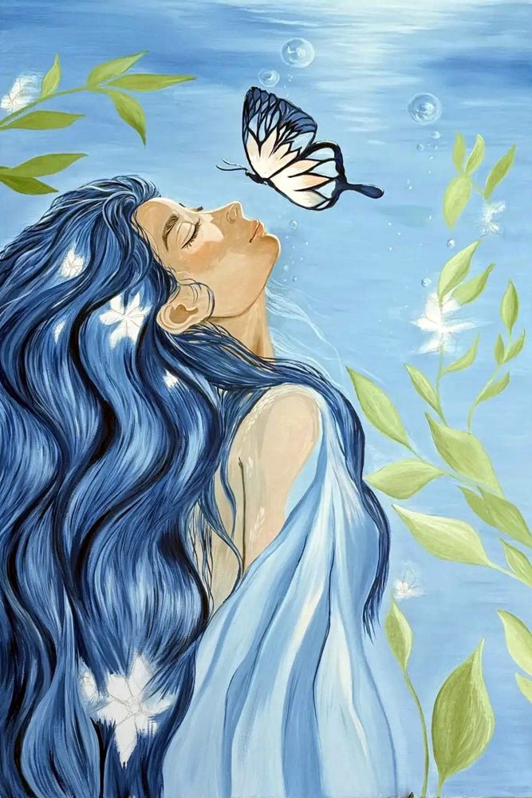

Наслаждение
Масло
60 × 90 см
2026
Бабочка у губ — это наслаждение: нежное, почти неуловимое касание, которое замечаешь, когда оно уже улетело.

Масло
60 × 90 см
2026
Бабочка у губ — это наслаждение: нежное, почти неуловимое касание, которое замечаешь, когда оно уже улетело.